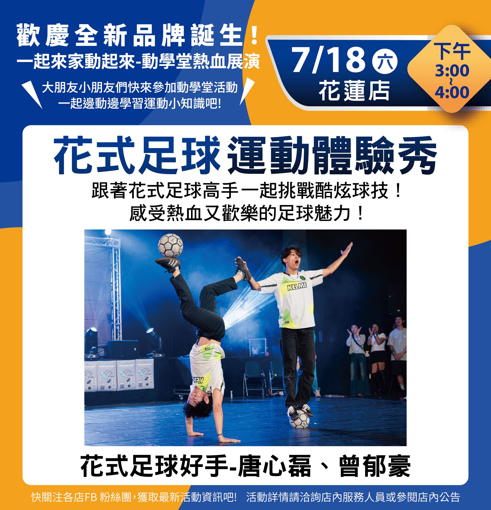
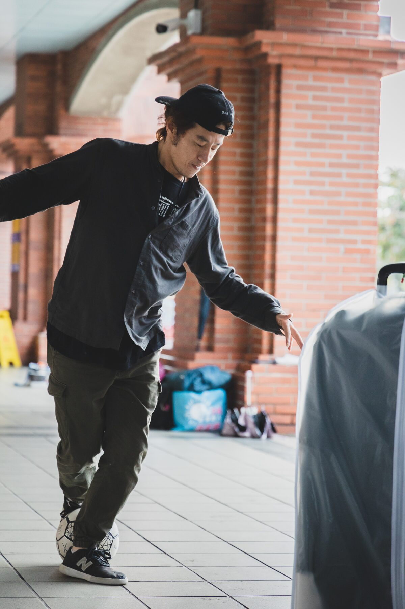
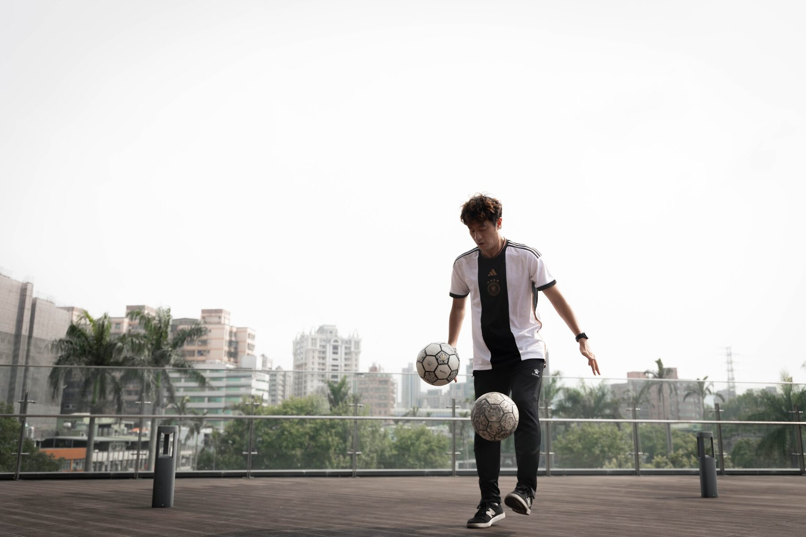
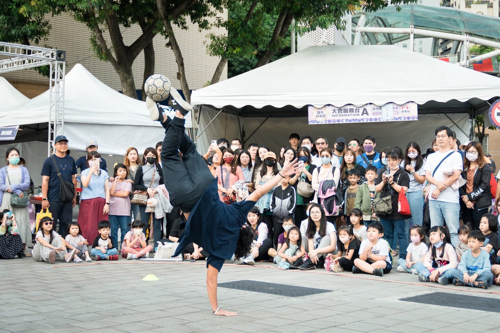
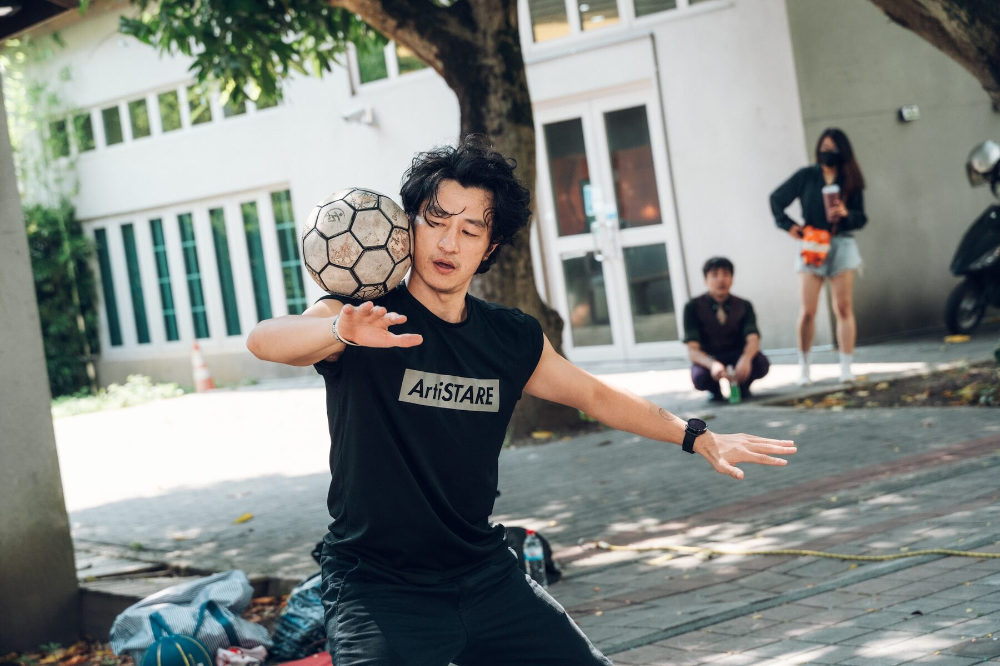
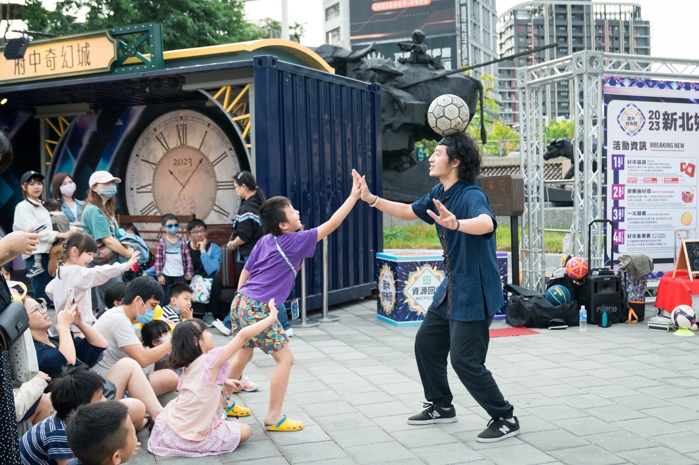
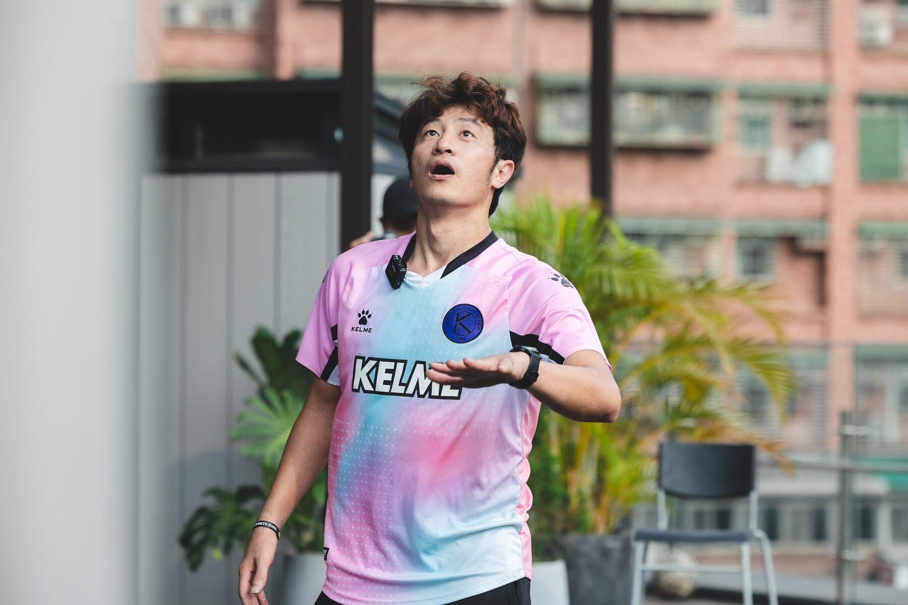
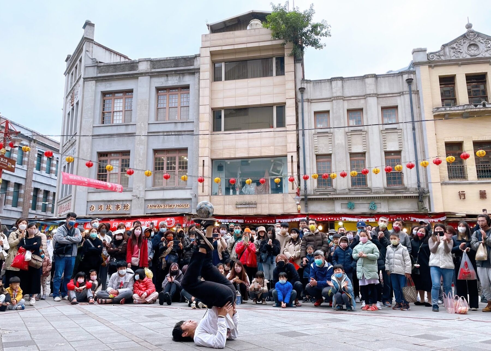

本週演出
花式足球運動體驗秀
動學堂熱血展演・花蓮店
跟著花式足球好手唐心磊、曾郁豪，一起挑戰酷炫球技， 在近距離演出與互動體驗中，感受熱血又歡樂的足球魅力。 歡迎大朋友、小朋友到現場邊動、邊玩、邊學運動小知識。
查看完整公告Street athlete · Performer · Coach
讓足球不只被踢，
而是在空中舞動。
台灣花式足球運動員、街頭藝人。以技巧、節奏與現場互動， 把每一次控球變成觀眾記得的演出。

CONTROL / RHYTHM / IMAGINATION
Upcoming Show

本週演出
動學堂熱血展演・花蓮店
跟著花式足球好手唐心磊、曾郁豪，一起挑戰酷炫球技， 在近距離演出與互動體驗中，感受熱血又歡樂的足球魅力。 歡迎大朋友、小朋友到現場邊動、邊玩、邊學運動小知識。
查看完整公告About Spider

從一顆球開始，我把熱愛練成技巧，再把技巧帶上舞台。
我是唐心磊，花式足球運動員、表演者與教練。從街頭、商場、校園到國際賽事， 我持續用足球串起不同的人，讓觀眾不只是看見高難度動作，也能感受到節奏、幽默與現場的溫度。
Lower、Upper、Sit-down 與 Transition 是動作語彙；真正讓演出完整的， 是每一次和觀眾的眼神、驚呼與擊掌。
《少週封面故事》你說時間不夠用？他每天擠出 3 小時踢出世界
My Story
我不是從小接受專業訓練的足球選手。大學才真正開始踢球， 卻在一次近距離看見「後空翻夾球」後，決定每天練習三小時， 把原本遙不可及的畫面，一點一點練成自己的舞台。
從《足球小將翼》的憧憬出發，進入大學後加入校隊，正式走進足球世界。
日本職業選手的後空翻夾球，點燃了每天至少練習三小時的決心。
取得街頭藝人證照，用音樂、技巧與互動，讓更多人第一次認識花式足球。
在工程師、家庭與表演者之間找到平衡，讓熱愛成為可以走一輩子的路。
花式足球就像練武功。從基本招式開始，再串成只屬於自己的套路， 一顆球因此有了無限可能。
Family Freestyle
當親子之間的默契遇上花式足球，技巧不只是一個人的表現， 而是兩個人一起完成的節奏與故事。
_Original.jpg)
_Original.jpg)
_Original.jpg)
NATSUKI 夏姬
她不只是我的女兒，
也是能一起站上舞台的表演夥伴。
夏姬把 breaking 的力量、定格與地板動作帶進花式足球， 發展出屬於自己的節奏。父女同台時，我們用足球串起技巧、互動與故事， 帶來少見又充滿溫度的親子花式足球演出。
Watch Us Move
從 breaking 與花式足球的跨界，到父女共同挑戰高難度動作， 每一支影片都是我們一起練習、一起站上舞台的紀錄。
Performance
從五分鐘開場到完整主題節目，依活動場地、受眾與品牌需求設計內容， 讓專業技巧、故事與互動自然進入每一個現場。
企業活動、品牌發表、頒獎典禮、運動賽事與大型節慶。
把觀眾拉進節奏裡，讓驚呼、笑聲與掌聲成為演出的一部分。
用容易上手的挑戰，帶孩子與成人體驗控球、創意和成就感。
Selected Moments





Performance Resume
Featured Performance · 2023
以花式足球參與桃園在地舞台演出，透過技巧、節奏與現場感染力，為活動帶來充滿動感的足球表演。
前往 YouTube 觀看完整演出 ↗Live Performance · 2026
在 Songyan Summer Festival 帶來花式足球演出與體驗，結合創意雜耍、音樂節奏與高難度控球，讓觀眾近距離感受足球玩出花的魅力。
前往 Facebook 查看演出紀錄 ↗Hotel Performance · 2026
世界盃期間於桃園大溪笠復威斯汀度假酒店帶來花式足球演出，以精彩控球與現場互動，和旅客一起感受足球盛會的熱血氣氛。
演出日期｜6 月 6 日、6 月 13 日
前往 Facebook 查看活動紀錄 ↗Highlights
比賽鍛鍊技術，舞台磨出表演；每一段經歷，都成為下一次演出的底氣。
巨城最佳獎
觀看總決賽 ↗海外邀請選手
WORLD STAGE評審最佳獎
觀看 12 強演出 ↗最佳創意獎
BEST CREATIVE第六季明日之星
RISING ARTIST團體表演賽冠軍
查看賽事紀錄 ↗Top 16
查看賽事紀錄 ↗冠軍
CHAMPIONTelevision Appearance
參與民視節目演出，與 LAD 論文小組夥伴曾郁豪一起把花式足球帶進攝影棚，用技巧、節奏與團隊默契，讓更多觀眾看見足球的另一種可能。
Let’s make the crowd move
商業演出・街頭藝術・校園推廣・品牌合作・花式足球教學